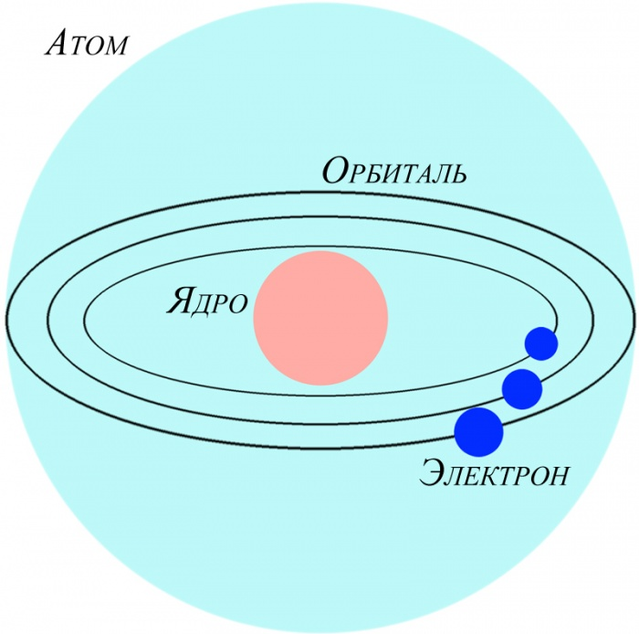
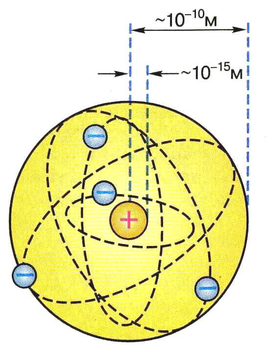

Поняття «атом» вперше зустрічається у творах давньогрецьких філософів і означало найдрібніші, неподільні частинки, з яких складається світ.
Такі уявлення про атоми були поширені до початку ХХ ст. Перші докази складності будови атома були одержані при вивченні проходження електричного струму через рідини і гази. Було встановлено, що електрика існує у вигляді окремих одиничних зарядів, які під дією електричного поля у вакуумі відхиляються до катода. Ці «катодні промені» мали негативний заряд і були названі електронами.
Ще одним свідченням складності будови атомів стало відкриття здатності атомів певних елементів самовільно розпадатись. Це явище дістало назву «радіоактивність».
Подальші відкриття ядра, протона, нейтрона, визначення зарядів елементарних частинок, надихнули вчених на створення моделей атома. Першу модель атома запропонував Дж. Томсон у 1903 р.
Дослід Резерфорда проходження а-частинок через тонку металічну (срібну або золоту) фольгу показало, що більшість з них проходить через фольгу вільно і лише деякі змінюють траєкторію руху. Це навело вченого на думку, що атом побудований на зразок Сонячної системи, тому запропонована ним модель атома була названа «планетарна модель будови атома».
Сторінку створив Білібін Данило